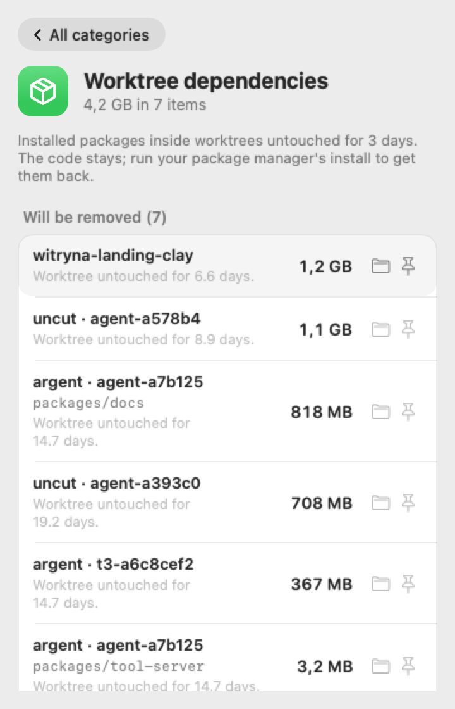
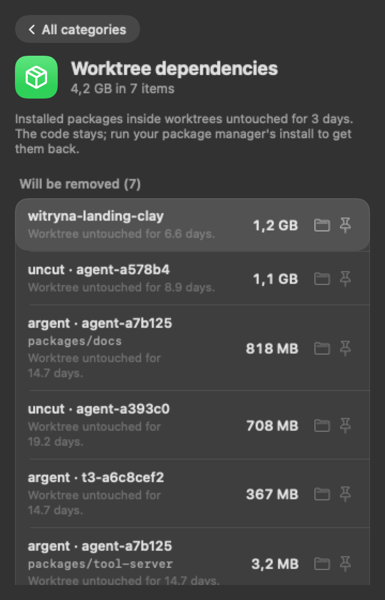
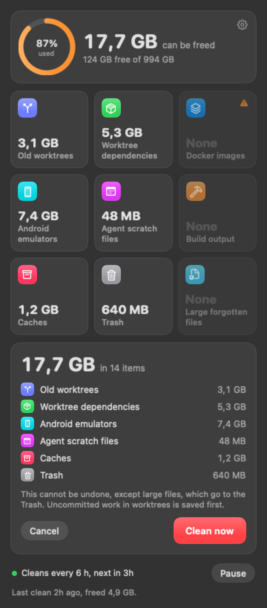
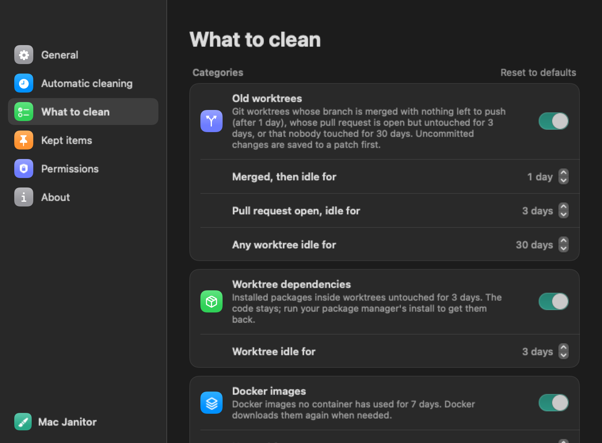
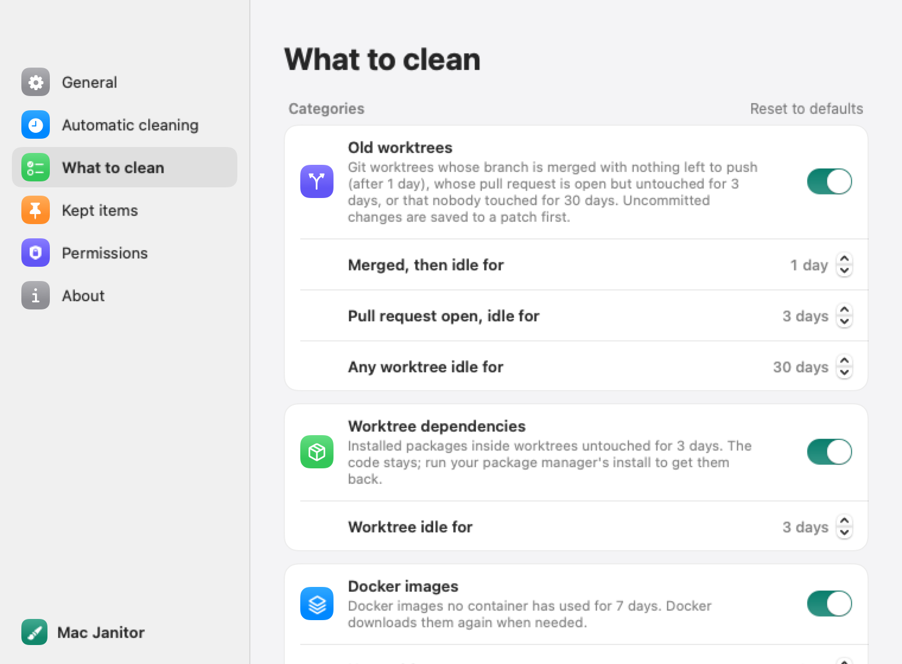

Get your disk back from your dev tools.
Mac Janitor sits in the menu bar and finds the leftovers: old worktrees, node_modules, build folders, caches and the Trash. You see every item before anything goes.


What it cleans
Things a build, an install or a download makes again. Each rule waits until the item has sat unused for a while.
- Old worktrees merged with nothing left to push, or untouched for 30 days
- node_modules in worktrees nobody opened for 3 days
- Build output in projects that have not changed for two weeks
- Caches nothing has read for a month
- Docker images, Android emulators and agent scratch folders left unused
- The Trash, for items trashed over a week ago
What it never touches
The rules are careful by default, and every check runs again right before a delete.
- Anything a running app has open, or a LaunchAgent points to
- Anything you pin to keep, and everything inside it
- Unpushed commits. Uncommitted changes are saved to a patch first
- Your documents, photos and music
- Large files, unless you pick them by hand. Then they go to the Trash


You see each item before it goes
Open a category and every item has a name you recognise, the project and worktree it belongs to, its size and the reason it qualifies. Pin anything you want to keep. Cleaning asks once more, with the totals.
Prefer it hands-off? Turn on automatic cleaning and pick how often. It stays off until you do.
One switch in Privacy & Security
macOS guards your Desktop, Documents, Downloads and the Trash. Without Full Disk Access, Mac Janitor skips them and never pops up a prompt.
Setup opens the right page in System Settings and shows the moment access is on. Only Mac Janitor needs to be in the list: its scheduled cleans run as the same app.



Rules you can read
Every category says in plain words what it removes and when. Change the waiting times, switch categories off, and keep a list of folders that are never touched.
Questions
Can I undo a clean?
Deleted items are gone, except large files, which go to the Trash. Before a worktree goes, its uncommitted changes and small untracked files are saved for 30 days, and commits that no branch holds get a ref.
Will it delete something I am working on?
Anything open in a running app, or used as a working folder, is left alone. So is every item you pin. Each rule also waits days or weeks of inactivity before an item qualifies.
Why does it need Full Disk Access?
To look inside Desktop, Documents, Downloads and the Trash. It still works without it and skips those folders.
Does it run in the background?
Only if you turn on automatic cleaning. A small background job then checks every hour and cleans at the interval you choose, or sooner when free space runs low.
Does it send anything anywhere?
No. It reads your disk and asks git and gh about your own repos. Nothing leaves your Mac.